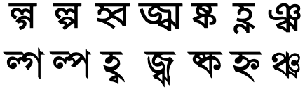

This page gathers together basic information about the Bengali script and its use for the Bangla language. It aims (generally) to provide an overview of the orthography and typographic features, and (specifically) to advise how to write Bengali using Unicode.
See also the companion document, Bengali character notes, for detailed information about specific Unicode characters.
Phonetic transcriptions on this page should be treated as an approximate guide, only. Many are more phonemic than phonetic, and there may be variations depending on the source of the transcription.
Select part of this sample text to show a list of characters, with links to more details. Change size: 28px
ধারা ১ সমস্ত মানুষ স্বাধীনভাবে সমান মর্যাদা এবং অধিকার নিয়ে জন্মগ্রহণ করে। তাঁদের বিবেক এবং বুদ্ধি আছে; সুতরাং সকলেরই একে অপরের প্রতি ভ্রাতৃত্বসুলভ মনোভাব নিয়ে আচরণ করা উচিত।
ধারা ২ এ ঘোষণায় উল্লেখিত স্বাধীনতা এবং অধিকারসমূহে গোত্র, ধর্ম, বর্ণ, শিক্ষা, ভাষা, রাজনৈতিক বা অন্যবিধ মতামত, জাতীয় বা সামাজিক উত্পত্তি, জন্ম, সম্পত্তি বা অন্য কোন মর্যাদা নির্বিশেষে প্রত্যেকেরই সমান অধিকার থাকবে। কোন দেশ বা ভূখণ্ডের রাজনৈতিক, সীমানাগত বা আন্তর্জাতিক মর্যাদার ভিত্তিতে তার কোন অধিবাসীর প্রতি কোনরূপ বৈষম্য করা হবেনা; সে দেশ বা ভূখণ্ড স্বাধীনই হোক, হোক অছিভূক্ত, অস্বায়ত্বশাসিত কিংবা সার্বভৌমত্বের অন্য কোন সীমাবদ্ধতায় বিরাজমান।
The Bengali (also called Bangla) script is used for writing the Bengali language, spoken by over 180,000,000 people mostly in Bangladesh and India. It is also used for a number of other Indian languages including Sylheti and, with one or two modifications, Assamese. It is a Brahmic script although its exact derivation is disputed. Bengali writing shares some similarities with the Dravidian-language scripts, particularly in the shapes of some vowel letters, but it is generally more similar to the Aryan-language scripts, in particular Devanagari.
The Bengali alphabet or Bangla alphabet (Bengali: বাংলা বর্ণমালা, bangla bôrnômala) or Bengali script (Bengali: বাংলা লিপি, bangla lipi) is the writing system for the Bengali language and, together with the Assamese alphabet, is the fifth most widely used writing system in the world. The script is used for other languages like Meithei and Bishnupriya Manipuri, and has historically been used to write Sanskrit within Bengal.
The Bengali script is an abugida. Consonants carry an inherent vowel which can be modified by appending vowel-signs to the consonant. See the table to the right for a brief overview of features for Bangla. (See the key. Character counts exclude ASCII characters.)
The orthographic letters of the Bengali script are derived from Sanskrit, and in some cases don't quite fit the needs of modern Bangla (eg. lack of a sound ɛ, letters for only 2 of many diphthongs, long and short letters where pronunciation no longer distinguishes those sounds, etc.)
Text direction
Text is normally written horizontally, left to right.
Structure
The effective unit of the Bengali writing systems is the orthographic syllable.
An orthographic syllable can be defined in one of the code point sequences described below. Lowercase letters represent combining characters. Some vowel signs may be displayed at the start of the sequence, although the code points representing them always appear after the base consonant
Consonant-based syllables
[C[n]h] [C[n]h] C[n] [h | v (n)] [f]
Legend
C
Consonant.
Cn
Consonant followed by nukta.
h
Hasant.
v
Vowel-sign.
n
Nasalisation diacritic (candrabindu).
f
Final consonant (one of khanda ta, anusvara, or visarga).
The core of a consonant-based syllable is a base consonant character, which may or may not additionally represent an inherent vowel if it stands alone.
If it is followed by a vowel-sign, eg. কীkī, কিki, and কোko, or hasant, eg. ক্k͓, there is no inherent vowel. At the end of a word, there may or may not be an inherent vowel, even if there is no hasant.
Any base consonant may be a combination of consonant code point plus nukta.
The base consonant can be preceded by up to two consonant+hasant pairs (where the consonant may also be a combination of consonant+nukta), but only if those consonants form conjuncts (ie. the hasant is invisible), eg. ক্কk͓k, ম্পm͓p, ক্ষk͓ʃ̇, and ন্ত্রn͓t͓r. If the preceding consonants carry visible hasant symbols, those are treated as separate orthographic syllables.
Note that the variable use of the hasant in Bengali means that a phonetic cluster of consonants can constitute a larger series of orthographic syllables. For example, করতালkrtɑlkɔrtɑl has two phonetic syllables, but 3 orthographic since the rt combination is not combined.
A vowel-sign may optionally be followed by a nasalisation diacritic.
Unless the base consonant is followed by a hasant, the syllable may be terminated by a final consonant repesented by khanda ta, anusvara, or visarga.
Special cases
In some cases, a RA + hasant followed by YA may introduce a ZWJ character before the hasant, in order to specify special shaping rules for the YA. Compare র্যr͓ʲ and র্যrᶻʷʲ͓ʲ.
The base consonant can be followed by either one or two code points representing vowel-signs, eg. কোko vs. কোkeɑ. Multiple vowel sequences only occur in decomposed text.
A base consonant may be followed by ZWNJ + vowel code point where the author wants to prevent ligation of the following vowel sign, eg. শুʃᶻʷⁿʲu.
Conjunct positions
Native Bengali words do not allow initial consonant clusters, and word-final clusters are rare. However, words borrowed from Sanskrit, English, etc. have introduced many such features.
Many Bengali speakers retain the native phonology, even when using Sanskrit or English borrowings, such as গেরামgerɑm (CV.CVC) for গ্রামg͓rɑmvillage (CCVC) or ইস্কুলịʃ͓̈kul (VC.CVC) forস্কুলʃ͓̈kulschool.wp
Most word-final clusters were introduced from English, eg. লিফ্টlipʰ͓ʈlift, elevator or ব্যাংকb͓ʲɑŋ̽kbank. In some dialects, a final nasal+stop is written as a cluster, whereas in standard Bengali it would use nasalisation, eg. চান্দcɑn͓d vs. চাঁদcɑm̽dmoon.wp
Vowel-based syllables begin with a standalone vowel, which is represented by a single independent vowel or vocalic.
An independent vowel may be followed by an anusvara, visarga or candrabindu (nasalisation), eg. উঃ, আঁụh̽, ɑm̽.
Character lists show:
Vowels
Vowel sounds
Click on the sound groups to see where else in the document each of the sounds are referred to.
Plain vowels
Sourcewp. Phones in a lighter colour are non-native or allophones.
Diphthongs
There are a large number of diphthongs in Bangla, and the chart below shows an incomplete set.wp
Sourcewp. Phones in a lighter colour are non-native or allophones.
Vowel harmony
The pronunciation of a vowel can be affected by the vowel in the following syllable. Radice provides the following table, though this is a simplification and there are many exceptions.
Followed by i or u
Followed by ɔ, o, e or a
o → u
o → ɔ
ɔ → o
u → o
e → i
e → æ
æ → e
i → e
For example, the verb শোনাʃonɑto hear with an i ending becomes ʃuni, দেখাdækʰato see becomes dekʰi, etc. This sometimes accounts for the pronunciation of the inherent vowel, eg. অতিথিotitʰiguest and অনুবাদonubadtranslation start with o rather than ɔ.
Inherent vowel
The inherent vowel is typically transcribed as a, and pronounced as ɔ or o. (And sometimes halfway between these
two, when influenced by surrounding sounds.) Bengalis are not always aware of these sound differences – thinking of this as one sound. So ক [U+0995 BENGALI LETTER KA] is actually pronounced kɔ or ko.
Note that there is also a vowel-sign pronounced o. This can lead to inconsistent spellings, eg. bhalo, good, well, can be spelled either ভালো or ভাল. Verb forms tend to be particularly inconsistent, sometimes basing the rationale on what looks good in a particular
context.
The rules for determining the sound of the inherent vowel are not simple. Partly it is a question of vowel harmony. The following two
tendencies can help:
In words with inherent vowels in two consecutive syllables, the sound will usually be ɔ..o, not o..ɔ, eg. গরমgɔrôm, hot. However, exceptions occur for prefixes, such as prɔ-, ɔ-, and sɔ-. r8
When pronounced at the end of a word after a conjunct consonant, the inherent vowel is always o, eg. যুদ্ধ. r8
The pronunciation tends to be o when followed by a one of i, j, u, w either immediately or in the next syllable, but ɔ otherwise. d400
Vowel-signs
Other than the inherent vowel, vowel sounds that follow a consonant sound are represented using vowel-signs, eg. কীki. This includes 2 diphthongs (each represented by a single code point), 3 prescript signs, and 2 circumgraphs.
ি␣ী␣ু␣ূ␣ে␣ো␣া␣ ␣ৈ␣ৌ
Bengali has lost the distinction between short and long vowels in pronunciation, but retains the difference in spelling.
The variation in pronunciation for the vowel-signs above can often be explained by vowel harmony.
Although it is one of the standard sounds of Bangla, ɛ doesn't have a specific vowel-sign allocated to it. It tends to be represented by combinations of other characters, eg. ত্যাগ.w
ো [U+09CB BENGALI VOWEL SIGN O] was originally pronounced ʊ, and that pronunciation sometimes persists alongside the o that came from Sanskrit, eg. নোংরাnoŋ̽rɑfoul can be pronounced nʊŋra or noŋra.
Two of the vowel-signs (and independent vowels) represent diphthongs (oi̯ and ou̯). However, most of the many diphthongs are represented by a sequence of vowels, eg. কেউ.w
Bengali vowel signs are all combining characters. In principle a single character is used per base consonant, but 2 vowel signs decompose to more than one character (see multipart). All vowel-signs are typed and stored after the base consonant, whether or not they precede it when displayed. The font takes care of the glyph positioning.
Almost all of the vowel-signs are spacing combining characters, meaning that they consume horizontal space when added to a base consonant..
Two of the vowel-signs (and independent vowels) represent diphthongs (oi̯ and ou̯). However, most of the many diphthongs are represented by a sequence of vowels, eg. কেউ.w
The single code point per vowel-sign, is the preferred form and the form in common use for Bengali. However, the parts are separated in Unicode Normalisation Form D.
Alternate code point sequences for vowel-signs that surround the base.
Whichever approach you use, the vowel-signs must be typed and stored after the consonant or consonant cluster that they surround. In the case of multi-character vowel-signs, the order is also important and must be as shown above.
Nasalisation
ঁ [U+0981 BENGALI SIGN CANDRABINDU] nasalises the vowel in a syllable, eg. হ্যাঁh͓ýɑm̽yes, হাঁপান. Nasalised vowels include ĩ ũ ẽ õ ɛ̃ ɔ̃ ã.
The candrabindu appears over the top of an independent vowel, but over the basic consonant when a vowel sign is attached, not over the vowel sign, In the sequence of characters, however, this should occur after any combining vowel sign associated with the same syllable.
This positioning is not evident when using the Noto Sans webfont, but if you apply another font, such as Kohinoor Bangla, it appears in the correct location. Note how the base consonant is identified correctly in the second word below, even though it is 4 code points away.
The Kohinoor Bangla font positions the candrabindu over the base consonant.
Vowel ligatures
Sometimes vowel signs (particularly u) form ligatures with a preceding base consonant. The table below shows ligated and non-ligated forms for several combinations. In certain contexts it may not be appropriate to ligate (eg. newspapers and modern typefaces). Both forms are equivalent in every way but visually.
list all 7
রুরুruru
রূরূrūrū
হৃহৃhr̥hr̥
হুহুhuhu
ন্তুন্তুn͓tuntu
শুশুʃuśu
গুগুgugu
The default behaviour of a given font can be modified using the zero-width non-joiner character in Unicode content. For example, a font that produces the ligature গুgu can be made to show the simpler form গু by the sequence গ + ZWNJ + ু [U+0997 BENGALI LETTER GA + U+200C ZERO WIDTH NON-JOINER + U+09C1 BENGALI VOWEL SIGN U].
Vowel-sign placement
The following list summarises where vowel-signs are positioned around a base consonant to produce vowels, and how many instances of that pattern there are.
3 prescript, eg. কিki
3 postscript, কীkī
2 subscript, eg. কুku
2 pre+postscript, কোko
Vowel absence
The inherent vowel is pronounced at the end of some words and not others, eg. গরমgɔrôm, hot vs. গড়ানgɔɽɑnô, to roll. There is no real way to tell when it is pronounced and when not in this position, except that it is usually pronounced following a word-final consonant cluster.
Bengali uses ্ [U+09CD BENGALI SIGN VIRAMA] (called hasant in Bengali) to kill the inherent vowel after a consonant. The virama is rarely seen. As just mentioned, no virama is used at the end of a word, or in many other situations.
The virama is used, however, when the consonant is part of a consonant cluster but also usually hidden (see clusters).
The virama is visible, however, if it isn't followed by a consonant, eg. ক্k͓ explicitly represents just the sound k.
Click on the sounds to see where else in the document they are referred to.
labial
dental
alveolar
post-
alveolar
retroflex
palatal
velar
glottal
stop
pb pʰpfbʰ
td tʰdʰ
ʈɖ ʈʰɖʰ
kɡ kʰɡʰ
affricate
t͡ʃd͡ʒ t͡ʃʰd͡ʒʰ
fricative
f
sz
ʃ
ɦh
nasal
m
n
ŋ
approximant
w
l
j
trill/flap
rɾ
ɽ ɽʰ
Sourcewp. Phones in a lighter colour are non-native or allophones.
pf, pʰ and f are alternative pronunciations for the same phoneme, depending on where the speaker is from, and all are written using ফ [U+09AB BENGALI LETTER PHA],
True retroflex (murdhonno) consonants are not found in Bengali. They are apical postalveolar in Western Dialects. In other dialects, they are fronted to apical alveolar.wp
r occurs word-initially, whereas ɾ occurs medially and finally. Both sounds are written using র [U+09B0 BENGALI LETTER RA].wp
s and ʃ are often merged. z is found mainly in foreign words.wp
In the Bangla spoken in Dhaka, ɾ and ɽ are often indistinct phonemically, eg. করা and কড়া can be homophonous.wp
The detailed information about pronunciation of the characters listed in this section (especially with respect to consonant clusters) can be found by following the links to the character notes document. We mention a few salient points below.
জ [U+099C BENGALI LETTER JA] is sometimes pronounced z in Bengali words, but is also used in foreign words, eg. জাকাত, and আজিজ.
য [U+09AF BENGALI LETTER YA] is pronounced d͡ʒ only at the beginning of a word, eg. যখন. When used in a consonant cluster it doubles the length of the preceeding consonant, eg. জন্য, or modifies the following vowel, eg. ব্যথা.
ব [U+09AC BENGALI LETTER BA] in word-initial conjuncts can be silent, and in conjuncts between vowels can lengthen the previous consonant.
Two more characters are specifically for Assamese.
ৰ␣ৱ
The consonant cluster ক্ষk͓ʃ̇ is called khiyɔ and is often treated as a letter of the alphabet in that some dictionaries give it it's own section, eg. ক্ষুদ্র.
Repertoire extension with nukta
़ [U+093C DEVANAGARI SIGN NUKTA] is used to create 3 additional letters, eg. the dot changes ডɖ to ড়ɽ. Here is a list of graphemes that combine nukta with an existing consonant.
The Unicode Standard recommends that content authors use decomposed sequences for these letters. However, the Unicode block also contains the precomposed code points shown below.
ড়␣ঢ়␣য়
Decomposed sequences are not recomposed by Unicode Normalisation Form C (NFC).
The nukta should always be typed and stored immediately after the consonant it modifies, and before any combining vowels or diacritics.
Final consonants
One letter and 2 diacritics represent syllable-final consonant sounds.
ৎ [U+09CE BENGALI LETTER KHANDA TA], pronounced t, is a variant form of ত [U+09A4 BENGALI LETTER TA] that was added to Unicode 4.1 as a separate character. In some words a tɔ that has no following inherent or other vowel may have this shape. It either comes at the end of words, eg. হঠাৎ, or before a consonant that doesn't naturally combine with tɔ, eg. উৎসব or সৎমা. Many such words, however, use ত, eg. সদাত্মাʃ̈dɑt͓mɑʃadɑtːɑ. It's not possible to say which will be used.
Sometimes spelling is inconsistent, especially when this or ঙ [U+0999 BENGALI LETTER NGA] are used in a conjunct, eg. সাঙঘাতিকʃ̈ɑŋgʰɑtik or সাংঘাতিক; রঙrŋ or রং. However, in certain words the spelling is fixed. বাংলা is one such word. But, since this cannot support vowel signs, the word for Bengali nation (rather than language) has to be spelled with ঙ [U+0999 BENGALI LETTER NGA], ie. বাঙালীbɑŋɑlībɑŋgɑlī.
Lengthening the following consonant, eg. নিঃশব্দ. There is no aspiration.
The only common colloquial words containing this sign are বাঃ and দুঃখ.
In the sequence of characters, these should all occur after any combining vowel sign associated with the same syllable. None carry vowel signs.
See also the candrabindu diacritic, which nasalises a vowel.
Consonant clusters
The absence of vowels between consonants can be represented in the following ways:
with no special rendering, eg. করতাল.
by specially shaped combinations of character glyphs, eg. গন্ধ. Where the approach changes the shape of the constituent consonants, the cluster is referred to as a conjunct.
by showing the virama (called হসন্তhʃ̈n͓thɔsonto in Bengali), eg. ফ্ল্যাট.
where a syllable-final consonant diacritic is followed by a regular consonant.
Unlike languages written in the Devanagari script, consonant clusters are often not represented as conjuncts in Bengali. It is necessary to just know that the vowel should not be pronounced, eg. রিকশা. Grammatical suffixes and endings are typically written without conjuncts, eg. খাননাkʰɑnnɑkʰɑnnɑ, which is the present tense form khan plus negative suffix na; করছkrcʰkorcʰo, which is stem kôr from kôra plus present continuous ending chô.
The font usually determines which visual method is used, although it is possible to influence this (see below).
Quite often, clustered consonants are pronounced differently than you would expect. In particular, conjuncts ending with ব [U+09AC BENGALI LETTER BA] or ম [U+09AE BENGALI LETTER MA] tend to not pronounce the latter, but double the length of the consonant before it, eg. .
Nasals in conjuncts tend to conform to phonological patterns. Velar consonants (k, kh, g, etc) combine with ঙŋɔ, palatal consonant (c, ch, ..) combine with ঞñɔ, retroflex ণɳɔ, dental নnɔ, and labial মmɔ.
Show a detailed list of consonant clusters, arranged by their approach to conjunct shaping.
This set of tables shows conjunct forms for a range of characters. It is not exhaustive. The shapes shown here are those contained in the Noto Sans Bengali font. Other fonts may combine components in different ways. Click on the red characters if you want to see the standard forms.
Components arranged vertically.
list all 63
ব্লb͓lbl
ক্লk͓lkl
ক্বk͓bkb
ঘ্নgʰ͓nghn
ফ্লpʰ͓lphl
ক্কk͓kkk
ক্বk͓bkb
গ্গg͓ggg
গ্ধg͓dʰgdh
গ্নg͓ngn
গ্লg͓lgl
গ্বg͓bgb
হ্লh͓lhl
হ্ণh͓n̈hṇ
থ্বtʰ͓bthb
ঞ্ছñ͓cʰñch
ঞ্জñ͓ʤñj
ঞ্ঝñ͓ʤʰñjh
ল্কl͓klk
ল্গl͓glg
ল্পl͓plp
ল্বl͓blb
ল্লl͓lll
ণ্ণn͓̈n̈ṇṇ
ণ্মn͓̈mṇm
ণ্বn͓̈bṇb
ণ্ডn͓̈ɖṇḍ
ন্তn͓tnt
ন্থn͓tʰnth
ন্নn͓nnn
ন্বn͓bnb
ন্ত্বn͓t͓bntb
ম্নm͓nmn
দ্ভd͓bʰdbh
দ্বd͓bdb
ত্তt͓ttt
ত্ত্বt͓t͓bttb
ণ্ডn͓̈ɖṇḍ
ণ্ড্রn͓̈ɖ͓rṇḍr
ত্নt͓ntn
ত্বt͓btb
ট্টʈ͓ʈṭṭ
ক্টk͓ʈkṭ
প্পp͓ppp
প্নp͓npn
প্তp͓tpt
প্লp͓lpl
শ্নʃ͓nśn
শ্লʃ͓lśl
শ্বʃ͓bśb
ষ্কʃ͓̇kṣk
স্কʃ͓̈ksk
স্খʃ͓̈kʰskh
স্তʃ͓̈tst
স্থʃ͓̈tʰsth
স্নʃ͓̈nsn
স্লʃ͓̈lsl
স্বʃ͓̈bsb
স্ত্রʃ͓̈t͓rstr
ম্নm͓nmn
ম্লm͓lml
ম্ভm͓bʰmbh
ম্বm͓bmb
ঙ্কŋ͓kṅk
Components arranged side-by-side, frequently with simplification of the initial consonant.
list all 37
ব্বb͓bbb
ব্দb͓dbd
ধ্বdʰ͓bdhb
ল্টl͓ʈlṭ
ল্ফl͓pʰlph
ণ্টn͓̈ʈṇṭ
ণ্ঢn͓̈ɖʰṇḍh
ণ্ঠn͓̈ʈʰṇṭh
ন্দn͓dnd
ন্সn͓ʃ̈ns
ল্ডl͓ɖlḍ
দ্দd͓ddd
ড্ডɖ͓ɖḍḍ
ঙ্খŋ͓kʰṅkh
ঙ্মŋ͓mṅm
জ্জʤ͓ʤjj
জ্জ্বʤ͓ʤ͓bjjb
জ্বʤ͓bjb
জ্ঝʤ͓ʤʰjjh
চ্চc͓ccc
চ্ছc͓cʰcch
চ্ঞc͓ñcñ
ণ্ঠn͓̈ʈʰṇṭh
প্টp͓ʈpṭ
প্সp͓ʃ̈ps
শ্চʃ͓cśc
শ্ছʃ͓cʰśch
ষ্পʃ͓̇pṣp
ষ্ফʃ͓̇pʰṣph
স্টʃ͓̈ʈsṭ
স্পʃ͓̈psp
স্ফʃ͓̈pʰsph
ম্পm͓pmp
ম্ফm͓pʰmph
হ্বh͓bhb
Arranged in a way that involves ligation, significantly altering one or more of the components.
list all 21
ষ্ণʃ͓̇n̈ṣṇ
ব্ধb͓dʰbdh
হ্নh͓nhn
ঞ্চñ͓cñc
ত্থt͓tʰtth
ন্ধn͓dʰndh
ন্ধ্রn͓dʰ͓rndhr
ক্ষ্মk͓ʃ͓̇mkṣm
ক্সk͓ʃ̈ks
হ্মh͓mhm
ঙ্গŋ͓gṅg
দ্ধd͓dʰddh
দ্ধ্বd͓dʰ͓bddhb
ক্তk͓tkt
ঞ্ঝñ͓ʤʰñjh
ব্জb͓ʤbj
জ্ঞʤ͓ñjñ
ষ্ঠʃ͓̇ʈʰṣṭh
ষ্টʃ͓̇ʈṣṭ
ট্টʈ͓ʈṭṭ
Conjuncts ending with রr typically have a wavy line below.
list all 31
ব্রb͓rbr
ঘ্রgʰ͓rghr
ফ্রpʰ͓rphr
ধ্রdʰ͓rdhr
খ্রkʰ͓rkhr
গ্রg͓rgr
থ্রtʰ͓rthr
হ্রh͓rhr
ন্ত্রn͓t͓rntr
ন্দ্রn͓d͓rndr
ণ্ড্রn͓̈ɖ͓rṇḍr
ন্ধ্রn͓dʰ͓rndhr
ম্রm͓rmr
স্রʃ͓̈rsr
ষ্ক্রʃ͓̇k͓rṣkr
দ্রd͓rdr
ক্রk͓rkr
ত্রুt͓rutru
ত্রt͓rtr
ভ্রbʰ͓rbhr
ড্রɖ͓rḍr
জ্রʤ͓rjr
ভ্রbʰ͓rbhr
চ্ছ্রc͓cʰ͓rcchr
ট্রʈ͓rṭr
প্রp͓rpr
শ্রʃ͓rśr
ষ্ট্রʃ͓̇ʈ͓rṣṭr
স্রʃ͓̈rsr
স্ট্রʃ͓̈ʈ͓rsṭr
স্প্রʃ͓̈p͓rspr
ম্ভ্রm͓bʰ͓rmbhr
ম্রm͓rmr
ম্প্রm͓p͓rmpr
Conjuncts ending with মm typically have a long component to the right.
list all 11
ক্মk͓mkm
গ্মg͓mgm
ল্মl͓mlm
ন্মn͓mnm
ম্মm͓mmm
স্মʃ͓̈msm
দ্মd͓mdm
ত্মt͓mtm
শ্মʃ͓mśm
ষ্মʃ͓̇mṣm
স্মʃ͓̈msm
Merging shapes as conjuncts
Conjunct shapes are most commonly formed by arranging the components vertically, reducing and combining the shapes of the individual components as needed, eg. স+থ→স্থʃ͓̈tʰ in আস্থা, or ল+ল→ল্লl͓l in ঝিল্লি.
Many conjuncts are formed by combining components horizontally, eg. ম+প→ম্পm͓p in ক্যম্পাস, or চ+চ→চ্চc͓c in উচ্চারণ.
A small set of conjuncts combines the consonants into a ligated shape, where individual components can't be easily discerned, eg. ষ+ট→ষ্টʃ͓̇ʈ in খ্রিষ্টান, or ক+ষ→ক্ষk͓ʃ̇ in ক্ষণ.
Different fonts may combine the same letters in different ways. The following figures shows characters that are combined in different ways by different fonts.

The conjuncts ল্গ ল্প হ্ব জ্ঝ ষ্ক হ্ণ ঞ্ঝ composed in different ways by the Noto Sans Bengali font (top) and Solaimon Lipi font (bottom).
Conjuncts with ra and ma
Like other scripts, initially র[U+09B0 BENGALI LETTER RA] is displayed in a non-standard way in consonant clusters.
An r that is pronounced at the start of a cluster is displayed as a mark above the following consonant(s), eg. rt in গর্তgɔrtôhole. Unlike Devanagari, it doesn't appear to be displayed above the vowel-sign of the orthographic syllable, eg. কুর্তা. Like other consonant clusters, it may not involve a conjunct at all, eg. কারসাজি.
A trailing rɔ is typically displayed as a wavy line below the other consonants, eg. gr in গ্রামgramvillage.
A cluster-final m is also displayed in a characteristic way, as a long line to the right with an appendage to the left at the bottom, eg. উন্মত্ত.
y̌ɔ-phɔla
Bengali also has a particular way of representing a cluster-final j semi-vowel. This is typically represented
using the full form of the preceding consonant followed by a special form of য[U+09AF BENGALI LETTER YA], ্য, known as y̌ɔ-phɔla, eg. হ্যাঁhyæ̃yes.
The effect of yo-phola at the end of a conjunct is generally (a) to double the length of the preceding consonant, and (b) to change the value of the following vowel if it is inherent or a. For more details, see the character notes.
Visible virama
When the virama is used it may be because the font doesn't have a particular conjunct ligature, but it may also be visible in places where the phonology is unusual, eg. ফ্ল্যাট; লান্চ (though these may also be spelled with conjuncts, eg. ফ্ল্যাটpʰ͓l͓ýɑʈ). It is also quite common to see উদ্যাপনụd͓ýɑpn to distinguish it from words like উদ্যানụd͓ýɑn. These words are etymologically related, but distinct phonetically.
Again, if a visible virama is wanted but not what the font does by default, it is possible to force it by inserting a ZWNJ character after the virama.
Syllable-final diacritics
As mentioned earlier, Bengali represents some final consonants using diacritics. Such syllable-final diacritics are followed by ordinary consonant shapes in consonant clusters.
Other letters
Besides the vowels and consonants described above, the Unicode Bengali block contains the following letters.
ঽ [U+09BD BENGALI SIGN AVAGRAHA] is a Sanskrit-derived symbol that is used in modern Bengali to lengthen vowel sounds, eg. কিঽঽঽ?kiiiiWhaaatt?, or শুনঽঽঽʃunoooListennn.w
The other letters don't appear to be commonly used in Bangla.
ঀ␣ৼ
Combining marks
Apart from the vowel-signs, the Bengali block contains the following combining characters, all of which are described elsewhere on this page.
ঁ␣ং␣ঃ␣়␣্␣ৗ
Unicode 11 also introduced the following sandhi mark for use with Sanskrit.
৾
Punctuation
Bangla usually uses ASCII punctuation.
The only punctuation in the Unicode Bengali block is this abbreviation symbol (see abbrev).
৽
Bengali also uses two punctuation marks from the Devanagari block. See phrase.
।␣॥
The following non-ASCII punctuation marks are in regular use (see quotations).
“␣”␣‘␣’
CLDR also lists a number of additional punctuation marks.
§␣–␣—␣†␣‡␣…␣′␣″
Symbols
The following symbols are used for the modern Bangla language.
৳␣৺
The first is the Bengali currency symbol (see currency). The second, ৺ [U+09FA BENGALI ISSHAR] is used alongside the names of deceased persons.
The Bengali block contains 2 more symbols, both also associated with currency.
৲␣৻
Formatting characters
U+200C ZERO WIDTH NON-JOINER (ZWNJ) can be used to force the production of a visible virama, rather than a half-form (see visiblevirama). It can also be used to prevent the formation of vowel ligatures (see vowelligatures).
There are also a number of currency symbols, used in older texts, including ৲[U+09F2 BENGALI RUPEE MARK] and the following currency denominator signs.
৲␣৴␣৵␣৶␣৷␣৸␣৹
These were used in an additive/subtractive system for specifying the number of ānā in the Bengali notation for currency used up to 1957, eg. ৷৷৶৹11 ānā (11 ana); ৸৶৹15 ānā (15 ana). There are 16 ana in one rupee, and the system works in multiples of 4. For a detailed explanation of usage, see [Pandey].
The Unicode block also has the punctuation ৽ [U+09FD BENGALI ABBREVIATION SIGN], but it's not clear to me how it is used. It doesn't appear to be in common use.
Other punctuation
tbd
Inline notes & annotations
tbd
Line & paragraph layout
Line breaking
Bengali is preferably wrapped at word boundaries.
Line-edge rules
According to ilreq, a line should not start with any of the following characters.
,␣.␣:␣;␣।␣॥␣)␣]␣}␣>␣+␣*␣/␣=␣_␣|␣~␣%
Line breaking should also not move a danda or double danda to the beginning of a new line, even if they are preceded by a space character. These punctuation characters should behave in the same way as a full stop does in English text.
Presumably, similar rules apply for the end of a line.
Character properties
Characters used for the Tamil language have the following assignments related to line-break properties.
AL
52
ি ী ু ূ ে ো া ৈ ৌ ই ঈ উ ঊ এ ও অ আ ঐ ঔ ঋ ৃ প ফ ব ভ ত থ দ ধ ট ঠ ড ঢ ক খ গ ঘ চ ছ জ ঝ য শ ষ স হ ম ন ণ ঞ ঙ র ল ড ় ঢ ় য ় ড় ঢ় য় ৎ ঽ ঁ ং ঃ ় ্ ৗ । ॥ ৳ ৺ ০ ১ ২ ৩ ৪ ৫ ৬ ৭ ৮ ৯ ৳ ৠ ঌ ৡ ৄ ৢ ৣ
AL (ordinary alphabetic and symbol characters) requires other characters to provide break opportunities; otherwise, unless tailored rules are applied, no line breaks are allowed between pairs of them.
BA (break after) indicates that it is normal to break after that character.
NU (number) behaves like ordinary characters (AL) in the context of most characters but activate the prefix and postfix behavior of prefix and postfix characters.
PO (postfix numeric) usually follows a numerical expression and may not be separated from preceding numeric characters or preceding closing characters, even if one or more space characters intervene. For example, there is no break opportunity in “(12.00) %”..
PR (numeric prefix) may not be separated from following numeric characters or following opening characters, even if a space character intervenes. For example, there is no break opportunity in “฿ (100.00)”.
QU (quotation) characters can be opening or closing, or even both, depending on usage. The default is to treat them as both opening and closing.